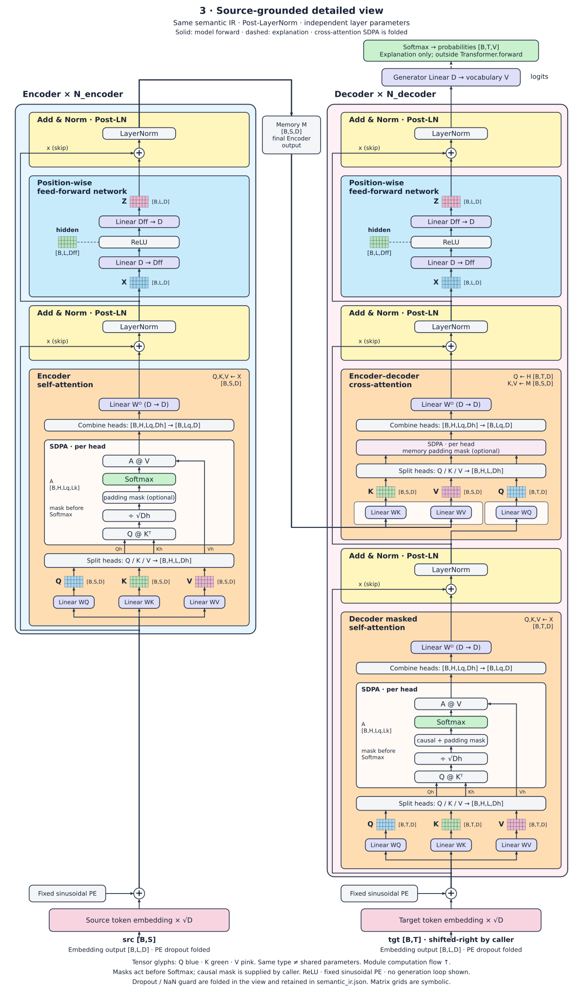

通用中间语义视图
专用参考

固定源码调用参数确定正常返回点时，闭合摘要突出该返回的依赖，其他源码返回路径仍可展开。动态条件、状态、未知边界保留原表达；几何退化的候选不采用。
Transformer 主图：76 → 70 条连线，线长减少 4.91%，交叉保持 12。这只是局部改善，整体仍未达到专用参考的组织效果。
{
"rule_version": "normal-returns/1",
"group": "paper:conditional-collection:d2c8bb51",
"aggregate": "model/470:4:composite:1/445:4:composite:1/296:4:composite:1/301:8:composite:1/301:8:composite:1/273:4:composite:1/147:4:composite:1/147:4:interface:1",
"selected_return": {
"node": "model/470:4:composite:1/445:4:composite:1/296:4:composite:1/301:8:composite:1/301:8:composite:1/273:4:composite:1/147:4:composite:1/174:8:interface:1",
"edge": "e00204",
"source_port": "out",
"aggregate_slot": "1",
"source_conditions": []
},
"predicate": {
"node": "model/470:4:composite:1/445:4:composite:1/296:4:composite:1/301:8:composite:1/301:8:composite:1/273:4:composite:1/147:4:composite:1/154:8:interface:1",
"slot": "need_weights",
"value": false,
"edge": {
"source": "model/470:4:composite:1/445:4:composite:1/296:4:composite:1/301:8:composite:1/301:8:composite:1/273:4:composite:1/147:4:composite:1/154:8:interface:1",
"target": "model/470:4:composite:1/445:4:composite:1/296:4:composite:1/301:8:composite:1/301:8:composite:1/273:4:composite:1/147:4:composite:1/172:11:control:1",
"kind": "control",
"source_port": "out",
"target_port": "in",
"evidence": "source-dependency",
"id": "e00196"
}
},
"selection": {
"selected": "model/470:4:composite:1/445:4:composite:1/296:4:composite:1/301:8:composite:1/301:8:composite:1/273:4:composite:1/147:4:composite:1/174:8:interface:1",
"call_constants": {
"attn_mask": null,
"need_weights": false
},
"scope": "normal-return paths of this invocation; source alternatives retained"
},
"branch_witnesses": [
{
"source": "model/470:4:composite:1/445:4:composite:1/296:4:composite:1/301:8:composite:1/301:8:composite:1/273:4:composite:1/147:4:composite:1/172:11:control:1",
"target": "model/470:4:composite:1/445:4:composite:1/296:4:composite:1/301:8:composite:1/301:8:composite:1/273:4:composite:1/147:4:composite:1/172:8:composite:1",
"kind": "control",
"source_port": "out",
"target_port": "true",
"evidence": "source-dependency",
"id": "e00197"
},
{
"source": "model/470:4:composite:1/445:4:composite:1/296:4:composite:1/301:8:composite:1/301:8:composite:1/273:4:composite:1/147:4:composite:1/172:11:control:1",
"target": "model/470:4:composite:1/445:4:composite:1/296:4:composite:1/301:8:composite:1/301:8:composite:1/273:4:composite:1/147:4:composite:1/172:8:composite:2",
"kind": "control",
"source_port": "out",
"target_port": "false",
"evidence": "source-dependency",
"id": "e00201"
}
],
"dependency_witnesses": [
{
"source": "model/470:4:composite:1/445:4:composite:1/296:4:composite:1/301:8:composite:1/301:8:composite:1/273:4:composite:1/147:4:composite:1/170:8:value-alias:1",
"target": "model/470:4:composite:1/445:4:composite:1/296:4:composite:1/301:8:composite:1/301:8:composite:1/273:4:composite:1/147:4:composite:1/174:8:interface:1",
"kind": "interface-binding",
"source_port": "out",
"target_port": "in",
"evidence": "source-dependency",
"id": "e00202"
}
],
"binding": {
"source": "model/470:4:composite:1/445:4:composite:1/296:4:composite:1/301:8:composite:1/301:8:composite:1/273:4:composite:1/147:4:composite:1/174:8:interface:1",
"target": "model/470:4:composite:1/445:4:composite:1/296:4:composite:1/301:8:composite:1/301:8:composite:1/273:4:composite:1/147:4:composite:1/147:4:interface:1",
"kind": "interface-binding",
"source_port": "out",
"target_port": "1",
"evidence": "source-dependency",
"id": "e00204"
},
"selected_inputs": [
{
"source": "model/470:4:composite:1/445:4:composite:1/296:4:composite:1/301:8:composite:1/301:8:composite:1/273:4:composite:1/147:4:composite:1/170:8:value-alias:1",
"target": "model/470:4:composite:1/445:4:composite:1/296:4:composite:1/301:8:composite:1/301:8:composite:1/273:4:composite:1/147:4:composite:1/174:8:interface:1",
"kind": "interface-binding",
"source_port": "out",
"target_port": "in",
"evidence": "source-dependency",
"id": "e00202"
}
],
"alternative_inputs": [
{
"source": "model/470:4:composite:1/445:4:composite:1/296:4:composite:1/301:8:composite:1/301:8:composite:1/273:4:composite:1/147:4:composite:1/170:8:value-alias:1",
"target": "model/470:4:composite:1/445:4:composite:1/296:4:composite:1/301:8:composite:1/301:8:composite:1/273:4:composite:1/147:4:composite:1/172:8:composite:1/173:19:compute:1",
"kind": "data",
"source_port": "out",
"target_port": "0",
"evidence": "source-dependency",
"id": "e00198"
},
{
"source": "model/470:4:composite:1/445:4:composite:1/296:4:composite:1/301:8:composite:1/301:8:composite:1/273:4:composite:1/147:4:composite:1/160:11:value-alias:1",
"target": "model/470:4:composite:1/445:4:composite:1/296:4:composite:1/301:8:composite:1/301:8:composite:1/273:4:composite:1/147:4:composite:1/172:8:composite:1/173:19:compute:1",
"kind": "data",
"source_port": "out",
"target_port": "1",
"evidence": "source-dependency",
"id": "e00199"
}
],
"scope": "Normal return of this statically bound source invocation only; all other source paths and exact bindings remain expandable. No runtime execution, coverage or value equivalence assertion.",
"status": "summary",
"attached_edges": [
"e00198",
"e00199"
]
}候选新增一次交叉且增加线长，正式结果保持此前 SVG。右侧显示未采用的试验。
| 状态 | 节点旧 | 节点新 | 连线旧 | 连线新 | 交叉旧 | 交叉新 | 线长旧 | 线长新 |
|---|---|---|---|---|---|---|---|---|
| ForeignFour | 19 | 19 | 18 | 18 | 8 | 8 | 5750.9 | 5750.9 |
| ForeignGuarded | 19 | 19 | 18 | 18 | 3 | 3 | 4894.5 | 4894.5 |
| ForeignOpaque | 19 | 19 | 18 | 18 | 3 | 3 | 4878.5 | 4878.5 |
| MixedColumns | 22 | 22 | 22 | 22 | 3 | 3 | 8304 | 8304 |
| SameSource | 17 | 17 | 17 | 17 | 0 | 0 | 2917 | 2917 |
| MixedWeave | 29 | 29 | 29 | 29 | 0 | 0 | 5704.7 | 5704.7 |
| InterruptedMixer | 29 | 29 | 24 | 24 | 0 | 0 | 4362 | 4362 |
| BraidedInputs | 68 | 68 | 64 | 64 | 13 | 13 | 24463.3 | 24463.3 |
| GuardedInputs | 17 | 17 | 16 | 16 | 3 | 3 | 5052.5 | 5052.5 |
| StatefulInputs | 15 | 15 | 14 | 14 | 1 | 1 | 4838.3 | 4838.3 |
| UnknownInputs | 12 | 12 | 10 | 10 | 0 | 0 | 1522 | 1522 |
| ForeignReturn | 11 | 11 | 10 | 10 | 0 | 0 | 1585.3 | 1585.3 |
| UnknownReturn | 11 | 11 | 10 | 10 | 0 | 0 | 1585.3 | 1585.3 |
| NestedReturn | 16 | 16 | 16 | 16 | 6 | 6 | 4987.7 | 4987.7 |
| Invocation-FixedReturn | 14 | 14 | 13 | 11 | 1 | 0 | 2113 | 1341 |
| Invocation-FixedTuple | 14 | 14 | 13 | 12 | 1 | 0 | 2109 | 2027 |
| Invocation-DefaultReturn | 14 | 14 | 13 | 11 | 1 | 0 | 2113 | 1341 |
| Invocation-DynamicReturn | 14 | 14 | 13 | 13 | 1 | 1 | 2269 | 2269 |
| Invocation-FixedPair | 14 | 14 | 12 | 12 | 0 | 0 | 2016 | 2016 |
| Invocation-ReboundReturn | 15 | 15 | 14 | 14 | 0 | 0 | 1945.3 | 1945.3 |
| Invocation-UnknownReturn | 17 | 17 | 15 | 15 | 2 | 2 | 2010 | 2010 |
| Invocation-StatefulReturn | 20 | 20 | 18 | 18 | 7 | 7 | 5545.2 | 5545.2 |
| Invocation-LocalChoice | 17 | 17 | 16 | 16 | 2 | 2 | 3183 | 3183 |
| Transformer-panel-0 | 65 | 65 | 76 | 70 | 12 | 12 | 37341.7 | 35507.7 |
| Transformer-panel-1 | 44 | 44 | 48 | 48 | 3 | 3 | 15340.3 | 15340.3 |
| Transformer-panel-2 | 64 | 64 | 63 | 63 | 9 | 9 | 24976.2 | 24976.2 |
